Arquitectura TI, integración & cloud
Hola, soyAlexis.
Conecto sistemas.
Diseño posibilidades.
APIs, eventos y arquitectura cloud para
el mundo financiero y empresarial.
Arquitectura
con propósito.
De la decisión técnica
al sistema que funciona.
Soy Alexis, arquitecto de TI. Transformo necesidades de negocio en sistemas conectados, seguros y preparados para evolucionar.
Mi experiencia se centra en banca, seguros y plataformas empresariales. Diseño APIs, microservicios y arquitecturas orientadas a eventos sobre entornos híbridos y multicloud.
Trabajo junto a los equipos de ingeniería para que cada decisión de arquitectura se traduzca en estándares claros, resiliencia y una operación observable.
Empresas y clientes

- Cliente de TCS Perú
- Cliente de Softnet
Trabajo en
arquitectura.
Una selección de mi experiencia
en entornos donde la integración importa.
Experiencias profesionales. Los esquemas son ilustrativos y no representan infraestructura interna de las organizaciones.
De extremo
a extremo.
La arquitectura conecta el diseño,
la implementación y la operación.
APIs & integración
Contratos claros, seguridad y un ciclo de vida gobernado. Integraciones síncronas, asíncronas, eventos y batch.
Apigee · Azure API Management · OpenAPI · Kafka · Service Bus · MFT
Cloud & resiliencia
Arquitecturas cloud-native e híbridas. Microservicios, serverless y patrones para tolerar fallos sin perder de vista la operación.
AWS · Azure · GCP · Kubernetes · Terraform · Circuit Breaker
Diseño & gobierno
Del dominio al contrato de integración. Estándares compartidos y acompañamiento técnico a los equipos de desarrollo.
DDD · BIAN · TOGAF · C4 · Arquitectura hexagonal · API First
Seguridad & operación
Seguridad por diseño, trazabilidad distribuida y observabilidad. Visibilidad sobre latencia, errores y consumo de los servicios.
OAuth2 · mTLS · JWT · Dynatrace · OpenTelemetry · DevSecOps
Todo está conectado.
Una visión común, de los canales a la operación.Mi trayectoria.
De construir servicios
a definir cómo se conectan.
Aprender para
seguir construyendo.
Ingeniería de Sistemas
Universidad Privada de Tacna, 2016
Español nativo · Inglés B2
Conectemos
ideas.
¿Buscas sumar arquitectura de integración, APIs o cloud a tu equipo?
Cuéntame qué estás construyendo.